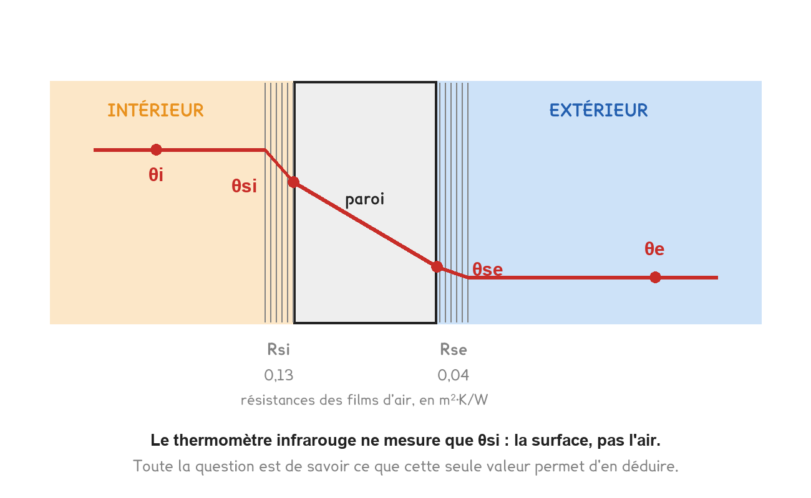
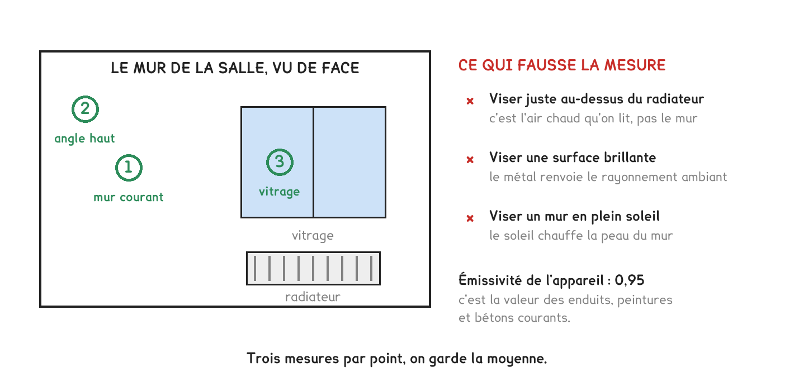
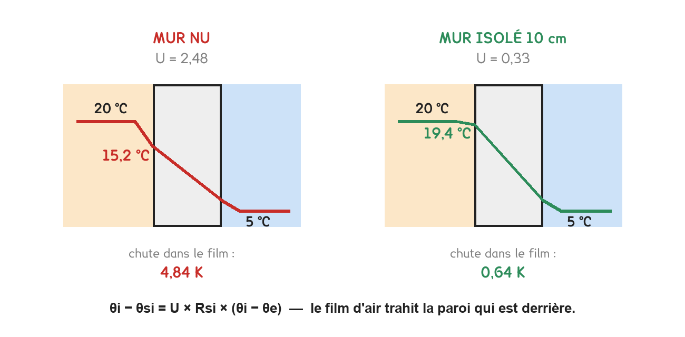
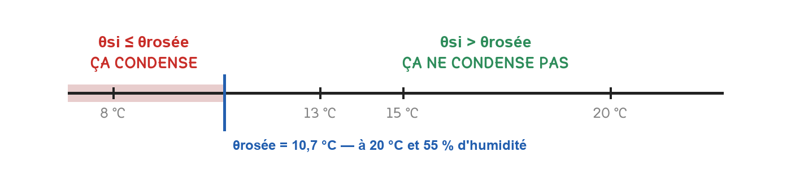
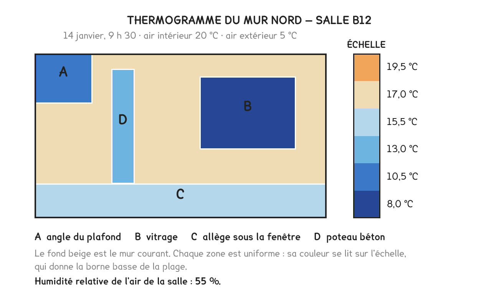

BTS FED option C · 2e année
Trois séances de calcul, et voici la paroi réelle. Elle ne donne pas son coefficient : elle donne une température de surface, et c'est à vous d'en tirer quelque chose, ou de reconnaître que vous ne pouvez pas.
2 outils · 8 questions · 3 exercices · 6 replis · 6 figures
Savoirs travaillés
Les séances 3 à 5 calculaient des parois sur le papier. Celle-ci en mesure une, avec un thermomètre infrarouge, et découvre que la mesure a un domaine de validité.
Sur une paroi mauvaise, l’écart est grand et la mesure parle. Sur une paroi bien isolée, il tombe sous l’incertitude de l’appareil, et le résultat ne veut plus rien dire.

Entre l’air du local et la surface du mur, il y a une couche d’air immobile qui résiste : c’est Rsi, la résistance superficielle intérieure. La chaleur qui la traverse y perd de la température.
θi − θsi = U × Rsi × (θi − θe)
Plus la paroi est mauvaise, plus sa surface intérieure est froide. C’est tout le principe de la séance : la température de surface est un révélateur du U, parce que les deux sont liés par une relation simple.
Dans un local à 20 °C, par 5 °C dehors :
| Paroi | U | θi − θsi | Surface à |
|---|---|---|---|
| Mur ancien non isolé | 2,00 | 3,90 K | 16,1 °C |
| Mur peu isolé | 1,20 | 2,34 K | 17,7 °C |
| Mur isolé | 0,45 | 0,88 K | 19,1 °C |
| Mur performant | 0,25 | 0,49 K | 19,5 °C |

La relation se retourne. Si l’on mesure θsi, on peut en déduire U, à condition de connaître les deux températures d’air.
U = (θi − θsi) / (Rsi × (θi − θe))
L’infrarouge trouve les défauts ; il ne mesure pas un U. Sur la paroi performante, l’écart attendu est de 0,49 K. Une incertitude de ±0,5 K sur l’appareil représente alors plus de 100 % de la grandeur mesurée : le résultat n’a aucun sens.

Un point de mesure ne suffit pas. On relève cinq points, on prend la moyenne, et on regarde l’étendue : c’est elle qui dit si la paroi est homogène ou si l’on a attrapé un pont thermique.

Toute surface plus froide que le point de rosée de l’air qui la touche se couvre d’eau. Le point de rosée se lit dans un tableau, à partir de la température de l’air et de son humidité relative.
| θ air | 40 % | 50 % | 60 % | 70 % |
|---|---|---|---|---|
| 18 °C | 4,2 | 7,4 | 10,1 | 12,4 |
| 20 °C | 6,0 | 9,3 | 12,0 | 14,4 |
| 22 °C | 7,8 | 11,1 | 13,9 | 16,3 |
Il y a condensation dès que θsi descend au niveau de θ rosée. Dans un local à 20 °C et 60 %, la rosée est à 12,0 °C : le mur à 16,1 °C ne condense pas, mais un pont thermique à 11 °C se couvre de buée.
Pour l’éviter, deux leviers, et deux seulement : agir sur la paroi, l’isoler pour remonter θsi, ou sur l’air, le ventiler pour abaisser θ rosée.

Un thermogramme est une image de températures de surface. Il repère un défaut en une seconde, et il ne donne aucun coefficient.
Les couleurs d’un thermogramme sont relatives à l’échelle choisie. Un mur parfaitement sain paraît alarmant si l’échelle est resserrée sur un demi-degré. Une image sans son échelle ne prouve rien.
Mission chantier n° 2
Repérer, dans le bâtiment de l’entreprise, une paroi que l’on suspecte d’être mal isolée. Relever la température de l’air intérieur, celle de l’extérieur, et la température de surface en cinq points.
En déduire un ordre de grandeur du coefficient U, et dire si le résultat est exploitable ou si l’écart est trop faible. Relever l’humidité relative du local et vérifier si la condensation est possible.
Exercice · A1-2
Un mur de coefficient U = 2,0 W/(m²·K) sépare un local à 20 °C d’un extérieur à 5 °C. Quelle est la température de sa surface intérieure ?
Exercice · A1-2
Dans un local à 20 °C, par 5 °C dehors, on relève une surface intérieure à 16,2 °C. Quel est le coefficient U de cette paroi ?
Exercice · A1-2
Sur une paroi performante, l’écart entre l’air et la surface vaut 0,49 K. Le thermomètre annonce une incertitude de ±0,5 K. Que concluez-vous ?
Pour aller plus loin
« Ça ne marche pas sur une paroi isolée » est une affirmation qu’on peut chiffrer, et le chiffrage est exactement ce que le savoir de physique-chimie appelle une incertitude relative.
Ce qu’on mesure réellement, c’est un écart : θi − θsi. Sa valeur dépend du U cherché.
| U de la paroi | Écart à mesurer | Incertitude relative avec ±0,5 K |
|---|---|---|
| 2,00 | 3,90 K | 13 % |
| 1,20 | 2,34 K | 21 % |
| 0,45 | 0,88 K | 57 % |
| 0,25 | 0,49 K | 103 % |
Au-dessous de U ≈ 1, la mesure cesse d’être un mesurage et devient une indication. On peut encore dire « cette zone est plus froide que sa voisine » ; on ne peut plus dire « U vaut 0,45 ». La différence est celle d’un ordre de grandeur et d’une valeur.
Trois façons d’élargir le domaine, et elles se cumulent :
Ce que ça enseigne au-delà de la thermique. Un instrument a un domaine où il mesure et un domaine où il indique. Savoir dire « ma mesure ne permet pas de conclure » est une compétence professionnelle, pas un aveu d’échec, et c’est une réponse qui rapporte des points à l’épreuve.
La relation θi − θsi = U × Rsi × ΔT décrit une paroi courante. Elle cesse de valoir dès qu’on s’approche d’une singularité, et une paroi en est pleine.
Les endroits à éviter, et ce qu’on y lirait :
| Endroit | Ce qu’on mesure vraiment |
|---|---|
| Un angle de murs | deux parois à la fois, et un pont thermique géométrique |
| Une jonction plancher-mur | le pont thermique, pas le mur |
| Un appui de fenêtre | un pont, et souvent le plus froid de la pièce |
| Derrière un meuble ou un rideau | une surface qui ne voit pas l’air du local, donc un Rsi bien plus grand |
| Au-dessus d’un radiateur | un panache d’air chaud qui réchauffe la surface |
Où l’on mesure : au milieu d’un panneau courant, à plus d’un mètre de tout angle, de toute jonction et de toute source. Cinq points répartis, jamais alignés sur une même horizontale.
Ce que la moyenne et l’étendue disent ensemble :
Une étendue large n’est pas un défaut de mesure : c’est une information sur la paroi. La confondre avec une erreur d’opérateur fait passer à côté du seul résultat intéressant du relevé.
Le lien avec les mathématiques de l’année est direct : moyenne, étendue, écart-type d’une série de relevés, et la question « combien de points sont hors tolérance ». C’est le même outil, appliqué à une paroi au lieu d’une régulation.
Constater qu’une paroi condense ne suffit pas ; il faut proposer. Deux leviers existent, et le bon dépend de ce qui a causé le problème.
Le levier « paroi » : remonter θsi. On isole, on traite le pont thermique, on double le vitrage. La surface devient plus chaude, elle repasse au-dessus de la rosée.
Le levier « air » : abaisser θ rosée. On ventile davantage, on traite la source d’humidité, une salle de bains sans extraction, du linge qui sèche, une cuisine. L’air contient moins d’eau, sa rosée descend.
Comment choisir, et c’est la question de justification :
| Le problème apparaît | Cause probable | Levier |
|---|---|---|
| Sur toute une paroi, uniformément | la paroi est mauvaise | isoler |
| Sur une bande, en pied de mur ou en angle | un pont thermique | traiter le pont |
| Dans une pièce seulement, sur toutes les parois | une source d’humidité locale | ventiler |
| Après des travaux d’étanchéité | la ventilation ne suit plus | ventiler |
Le dernier cas est le plus fréquent et le plus mal traité. On remplace des fenêtres, le bâtiment devient étanche, les infiltrations qui assuraient le renouvellement disparaissent, et l’humidité monte jusqu’à condenser. Le coupable apparent est la fenêtre neuve ; la cause est la ventilation absente.
Le calcul qui tranche. On connaît θi et l’humidité relative, donc la rosée. On connaît θsi. Si la marge est inférieure à deux ou trois degrés, la paroi est à risque même si elle ne condense pas aujourd’hui : il suffira d’une journée plus froide ou d’une lessive qui sèche.
Et l’humidité n’est pas seulement une gêne. Une surface qui reste humide développe des moisissures, qui sont un problème sanitaire avant d’être un problème esthétique. C’est ce qui fait de la condensation surfacique un sujet réglementé, et non un simple défaut de confort.
Un thermomètre infrarouge ne mesure pas une température : il mesure un rayonnement, et il en déduit une température en supposant que la surface rayonne d’une certaine façon. Cette hypothèse s’appelle l’émissivité.
Une surface parfaite rayonne à ε = 1. La plupart des matériaux du bâtiment en sont proches : peinture, plâtre, bois, béton, brique, verre sont tous entre 0,90 et 0,95. C’est pourquoi les appareils sont réglés d’usine sur 0,95 et donnent de bons résultats sans qu’on y pense.
Les métaux nus, eux, sont catastrophiques. Un aluminium poli ou un acier inoxydable ont une émissivité de l’ordre de 0,05 à 0,10 : ils rayonnent peu, et surtout ils réfléchissent l’environnement. L’appareil pointé sur une gaine en tôle brillante mesure en réalité le rayonnement du plafond, des lampes, et de l’opérateur lui-même.
Un relevé sur métal nu peut se tromper de dix ou vingt degrés, dans les deux sens, sans que rien ne le signale. La parade de terrain est simple : coller un morceau d’adhésif mat sur le métal, attendre qu’il prenne la température, et viser l’adhésif.
Trois autres pièges de la mesure sans contact :
Ce que la mesure sans contact fait très bien, malgré tout ça : comparer deux points voisins de même nature, dans les mêmes conditions. C’est précisément ce qu’on lui demande dans cette séance, trouver où c’est plus froid, pas de combien exactement.
Une caméra thermique produit des images spectaculaires, et des conclusions fausses dès que les conditions ne sont pas réunies. Un rapport de thermographie sérieux commence toujours par les décrire.
Les cinq conditions, et la raison de chacune :
Ce qu’une thermographie sait faire, et fait mieux que tout :
Ce qu’elle ne sait pas faire : donner un U, quantifier une déperdition, comparer deux bâtiments photographiés dans des conditions différentes.
L’infrarouge est un outil de localisation, pas de quantification. Il dit où aller chercher. Ce sont ensuite le calcul de la séance 4 et, si l’enjeu le justifie, une mesure par fluxmètre qui disent combien. Confondre les deux est l’erreur qui donne aux rapports de thermographie leur mauvaise réputation.
Cette séance est entièrement construite sur un geste : mesurer une température de surface sans rien ouvrir. C’est exactement la frontière réglementaire du circuit frigorifique, et elle vaut d’être connue au mot près.
| Geste | Attestation exigée ? |
|---|---|
| Relever une température de surface, au contact ou à l’infrarouge | non |
| Lire les pressions affichées par la machine ou la GTB | non |
| Ouvrir un capot, mesurer une intensité, relever un débit d’air | non |
| Brancher un manifold sur les vannes de service | oui |
| Contrôler une étanchéité, récupérer, recharger, braser | oui |
Ce qui déclenche l’obligation, c’est l’ouverture du circuit contenant le fluide, pas la proximité de la machine, pas l’outil employé. Brancher un manifold ouvre le circuit, même si l’on ne fait que lire.
Ce que la méthode de la séance permet quand même, et c’est beaucoup. En relevant les températures de surface aux quatre points du circuit, on retrouve sans rien ouvrir la température d’évaporation approchée, celle de condensation, et l’existence d’une surchauffe et d’un sous-refroidissement. C’est un prédiagnostic complet.
Une température de surface n’est pas la température du fluide : la paroi du tube, son isolant et le contact du capteur en écartent le relevé de un à trois kelvins. C’est exactement la remarque de la séance sur la paroi mesurée, et elle suffit à interdire d’en tirer une surchauffe au dixième près.
Cette page rappelle la séance. Elle ne remplace pas le polycopié et ne donne aucun corrigé. Tous les calculs se font dans votre navigateur ; rien n'est enregistré.